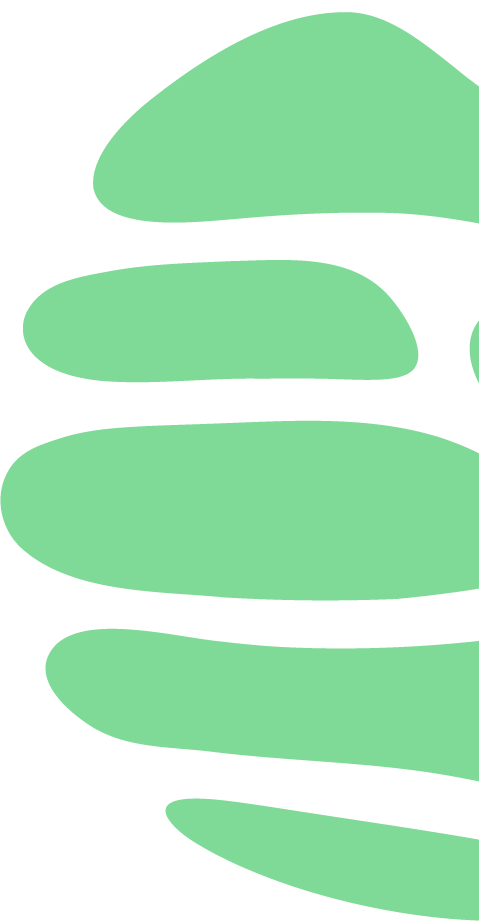
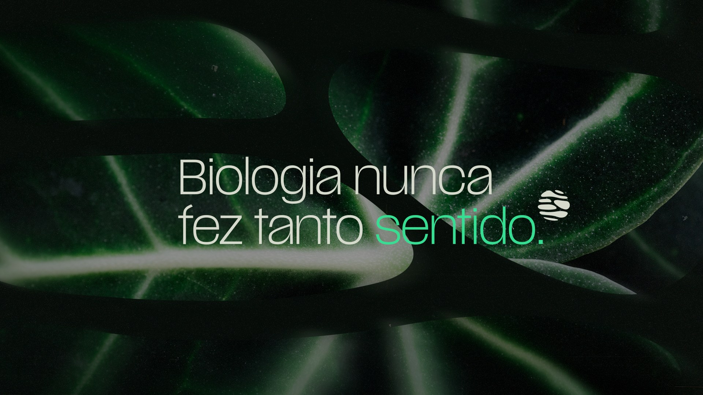

Chega de Biologia de Gavetas.
Biologia não se decora. Se conecta.
Você já estuda muito, mas ainda trava nas questões. A gente organiza a Biologia pra você entender, conectar e saber usar o que aprendeu, com o professor Vitor Hugo.
“Quando a Biologia faz sentido, a prova muda.”
O problema não é falta de estudo. É Biologia de Gavetas.
Bioquímica numa gaveta. Genética em outra. Fisiologia numa terceira. Cada assunto guardado separado do outro. E a questão da prova, que cobra os três de uma vez, não abre nenhuma delas.
Não organizamos apenas o conteúdo. Organizamos o caminho do aluno.
Você não precisa de mais Biologia acumulada. Precisa que a Biologia que você já tem pare de ficar solta, com o professor do seu lado, do primeiro assunto até a prova.
role e veja a Biologia se conectar ↓
Você sabe essa matéria.
Então por que errou essa questão?
Da célula ao vestibular, sem pular etapa.
Cada assunto conversa com o anterior — Biologia não se decora, se conecta.O que muda não é só a nota.
Mensagens reais que os alunos mandaram para o professor depois da prova. Transcritas aqui sem nome, foto ou telefone.
“Antes, Biologia era uma das minhas matérias terroristas. Agora faz parte das legais.”
“Prof, vc arrasa mesmo. Discursivas de Bio gabaritadas na Famema.”
“Nunca tinha me acontecido antes.”
“Caiu adaptações de plantas.”
“Coisa que você falou na aula de revisão.”
“Não foi problema biologia, não foi mesmo!”
“Eu revisei as anotações da Unicamp e gabaritei biologia na prova de ontem!”
“Fiquei com 76 acertos.”
“Caiu splicing alternativo na Famema. Só sabia por causa de você.”
“Caiu equilíbrio gênico, que revisamos semana passada.”
“Ontem na Unifesp caiu sobre splicing e eu lembrei na hora de você explicando. Sua revisão foi incrível!”
“É renovador, é contagiante e transmite sentido para a fase em que estamos vivendo.”
“Sabe aquele esquema do nucleotídeo que vc jurava que ia cair? Caiu hj na Unesp.”
“Fiz Famema hoje e fiz todas de bio muito segura.”

Calendário das Revisões 2026
Setembro a dezembro, aulão por aulão, na data certa de cada vestibular. Todos os pacotes incluem metodologia BC, guias de revisão, lista de exercícios e análise de incidências dos últimos 5 anos.